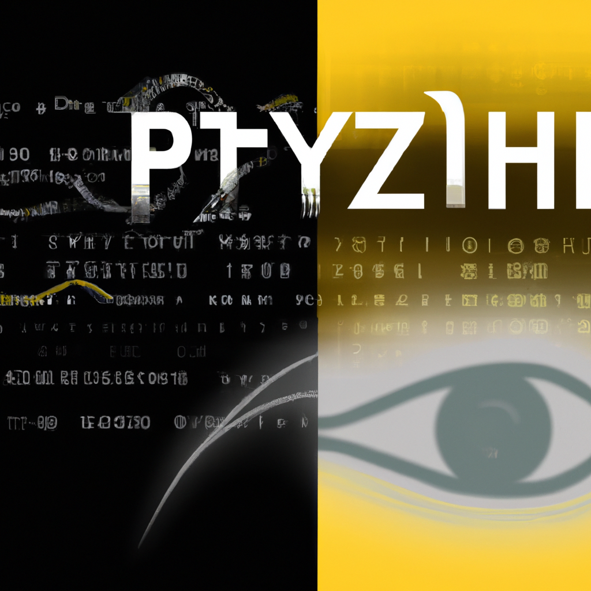

The future of Python and AI
With the current state of machine learning, many people are wondering if AI will eventually replace radiologists. The answer is a definitive no. While AI can provide us with some insights, it will never be able to fully replace a radiologist.
Radiology is a field that relies heavily on the human eye. Machines can be used to detect patterns and identify abnormalities, but they cannot interpret an image in the same way a radiologist can. A radiologist looks at the image differently and can recognize patterns and features that a machine may not be able to.
In addition, radiologists also have the skills and knowledge to diagnose diseases, which AI is not capable of. They understand the clinical context of an image, and can come up with the most accurate diagnosis for a patient.
Finally, even though AI can help generate reports, radiologists are needed to review the results, as they can provide more thorough and accurate reviews.
Overall, while AI can help us automate certain tasks, it will never be able to replace the radiologist. Radiologists are the ones who can look at an image and provide us with an accurate diagnosis.